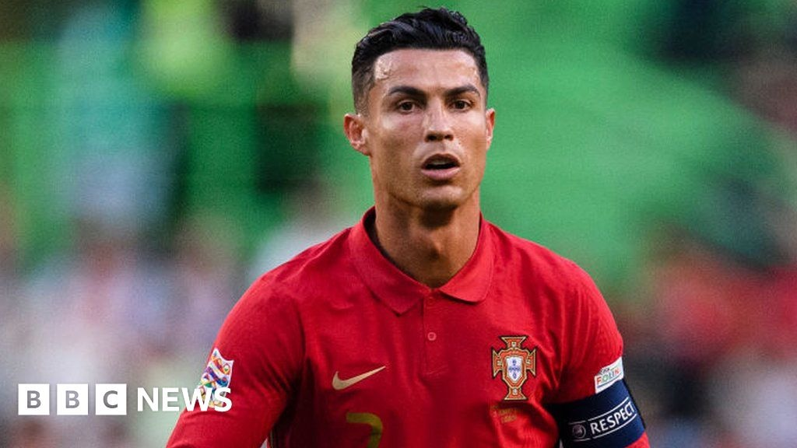

Las Vegas Hotel Incident
Case origin: On 13 June 2009, just after his record-breaking transfer to Real Madrid, Ronaldo met 25-year-old American schoolteacher Kathryn Mayorga at the Rain nightclub inside the Palms Place casino hotel in Las Vegas, USA. According to Mayorga's later account, Ronaldo sexually assaulted her inside his penthouse suite. Shortly afterwards she reported the matter to Las Vegas police, but at the time the police were unable to identify any suspect.
The hush-money agreement: In 2010 the two sides signed an out-of-court settlement and non-disclosure agreement. Ronaldo paid Mayorga $375,000 (about £288,000) in hush money in exchange for her silence. The deal was brokered by Ronaldo's agent Jorge Mendes and his legal team, and required Mayorga to keep the matter confidential and drop any legal action. Mayorga's lawyer said his client suffered from depression for a decade afterwards and even experienced suicidal tendencies, with a psychologist diagnosing her with post-traumatic stress disorder (PTSD).
Media exposure: On 14 April 2017, Germany's Der Spiegel first broke the story, reporting that Ronaldo had raped an American woman in Las Vegas in 2009 and paid hush money. The report was based on leaked confidential documents, including Ronaldo's own emails and correspondence with his lawyers. Ronaldo's legal team immediately threatened to sue Der Spiegel and insisted the encounter was 'consensual'. But the revelation caused global uproar, and mainstream media followed up in droves.
The #MeToo wave: Emboldened by the global #MeToo movement in 2017, Mayorga went public via Der Spiegel in September 2018 and formally filed a civil lawsuit against Ronaldo, seeking to overturn the NDA and claim at least $200,000 in damages. On 3 October 2018, her lawyer Leslie Stovall held a press conference detailing the case. Las Vegas police announced on 2 October that they were reopening the criminal investigation and forwarding the case to prosecutors.
Ronaldo's response: On 3 October 2018, Ronaldo posted a video statement on Instagram: 'I firmly deny the accusations against me. Rape is an abhorrent crime that goes against everything I believe in.' He called the reports 'fake news' and accused Mayorga of 'trying to promote herself through my fame'. His sponsors Nike and EA Sports both issued statements saying they were 'closely monitoring the situation', and Juventus's share price dropped nearly 10%, though the club's official Twitter account still posted in support of Ronaldo's 'great professionalism'.
Case outcome: In June 2022, US federal judge Jennifer Dorsey dismissed Mayorga's civil lawsuit. The reason was not a denial of the allegations themselves, but a finding that the plaintiff's lawyer Stovall had used illegally obtained confidential documents (Football Leaks material) as core evidence, violating lawyerly ethics and constituting 'a breach of the administration of justice'. The judge dismissed the case 'with prejudice', meaning Mayorga could not refile.
Public backlash: The dismissal sparked huge controversy. Women's rights groups and media outlets criticised a justice system more concerned with procedural flaws than substantive justice, allowing a 'wealthy defendant to escape through his resources'. Mayorga's legal team said it would consider an appeal, but in 2023 the US Tenth Circuit Court of Appeals upheld the original ruling. Las Vegas prosecutors announced in 2019 that they would not file criminal charges against Ronaldo due to insufficient evidence and the passage of time. Critics note the hush agreement itself was a second violation of the victim.
Broader comparison: Like many sports stars embroiled in sexual-assault scandals, Ronaldo used a vast legal team and commercial capital to dodge legal consequences. The case mirrors those of NFL quarterback Ben Roethlisberger and NBA legend Kobe Bryant — cash settlements, NDAs, and a media reversal, a textbook sports-world 'pay-your-way-out' pattern. The difference is that Ronaldo kept his top-tier endorsement deals throughout, never losing core sponsors such as Nike.